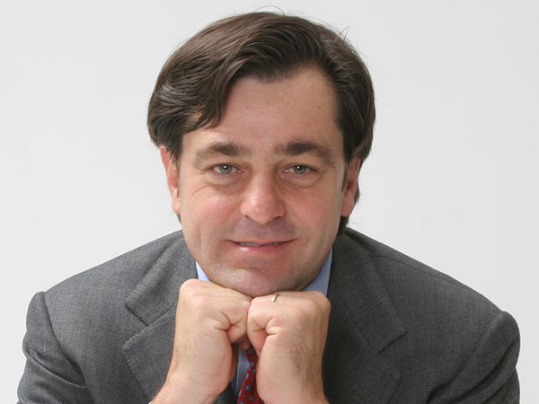
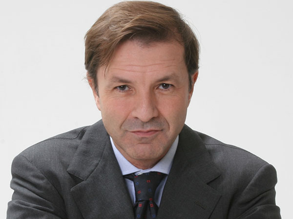
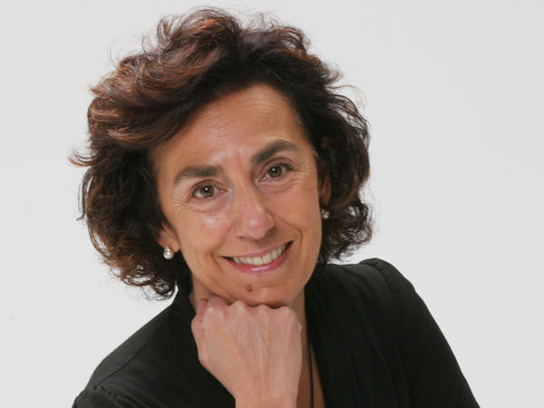
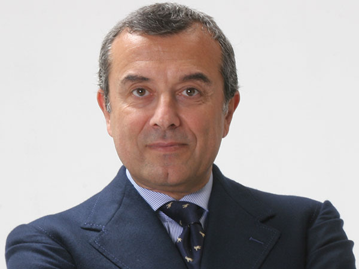
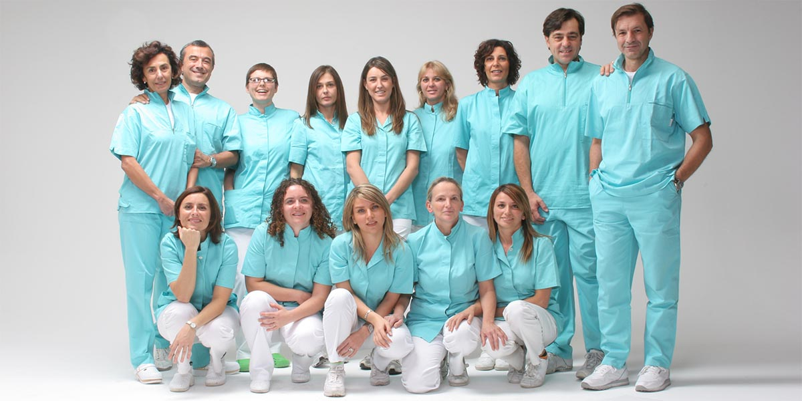

Socio fondatore
Dott. Andrea Gandolfi
Laureato con il massimo dei voti in Odontoiatria e Protesi Dentaria all'Università di Bologna (1989). Presidente nazionale AISO nel 1998-99.
Quattro soci fondatori e un team di specialisti in un unico studio nel centro di Bologna. Dalla prevenzione all'implantologia, cure complete per tutta la famiglia, con tecnologie digitali e grande attenzione a chi ha paura del dentista.

Rispondi a poche domande: ti diremo se è meglio chiamarci in giornata o prenotare una visita nei prossimi giorni, e cosa puoi fare nel frattempo.
Ecco cosa ci distingue, in parole semplici.
La nostra storiaLo studio nasce nel 2004 dall'unione di quattro studi bolognesi affermati. Ogni socio ha alle spalle oltre 35 anni di professione.
Implantologia, ortodonzia, endodonzia, chirurgia maxillo-facciale, gnatologia e igiene: specialisti dedicati, senza dover cambiare studio.
Radiologia digitale e tac 3D a basso dosaggio, scanner intraorale al posto delle paste da impronta, laser al posto del trapano quando possibile.
Vi mostriamo cosa vediamo con le telecamere intraorali e vi spieghiamo le alternative, perché possiate scegliere con serenità.
Per molte persone la parte più difficile è sedersi in poltrona. Per questo abbiamo scelto strumenti che rendono le cure più delicate, e ci prendiamo il tempo di spiegare ogni passaggio prima di iniziare.
Scopri la laserterapiaUn sistema moderno che riduce il fastidio dell'iniezione e l'intorpidimento delle labbra.
Niente vibrazioni né rumore; alcuni trattamenti si eseguono senza anestesia.
Il protossido d'azoto aiuta a rilassarsi in modo sicuro: ideale per i bambini e per chi è ansioso.
Scegliete la vostra esigenza: vi mostriamo solo i trattamenti che fanno al caso vostro.
Nel marzo 2004 i dottori Andrea Gandolfi, Lorenzo Garagnani, Licia Rosati e Stefano Valbonesi, già titolari di quattro importanti studi di Bologna, hanno unito esperienza e valori per dare vita allo Studio Odontoiatrico Associato Nove Archi.

Laureato con il massimo dei voti in Odontoiatria e Protesi Dentaria all'Università di Bologna (1989). Presidente nazionale AISO nel 1998-99.

Laureato con lode in Medicina e Chirurgia all'Università di Bologna (1983), specializzato in Odontostomatologia (1989).

Laureata in Medicina e Chirurgia all'Università di Bologna (1980), specializzata in Odontoiatria (1983). Specialista in Odontostomatologia.

Laureato con il massimo dei voti in Medicina e Chirurgia all'Università di Bologna (1977), specializzato in Odontoiatria e Protesi Dentaria (1980).
Nessuna sorpresa: sapete sempre cosa stiamo facendo e perché.
Chiamate o scriveteci: la segreteria fissa l'appuntamento nell'orario che preferite.
Raccogliamo la vostra storia clinica, le vostre esigenze e i vostri timori.
Denti, gengive e masticazione; immagini con telecamera intraorale e, se servono, radiografie digitali.
Vi illustriamo le soluzioni possibili con tempi e costi, per decidere con calma.
Umanità, cortesia, puntualità e precisione sono da sempre i principi su cui si fonda il nostro lavoro. A questi uniamo specialisti dedicati per ogni branca e un aggiornamento continuo.

Muovetevi liberamente tra le sale: vedrete dove vi accoglieremo, come sono organizzati gli spazi e le tecnologie che usiamo ogni giorno.
Un tour virtuale in 3D per esplorare sale, accoglienza e ambienti di Via Irnerio 41.
Tour 3D in arrivoDa oltre vent'anni ci prendiamo cura dei sorrisi di Bologna. Leggete cosa raccontano i pazienti della loro esperienza.
Ogni tecnologia ha uno scopo preciso: diagnosi più accurate, trattamenti meno invasivi, più comfort. Vedi tutte →
Impronta digitale intraorale e radiografia tridimensionale permettono di progettare gli interventi al computer ed eseguirli con chirurgia guidata.
Lastre ai fosfori senza liquidi di sviluppo, sensori digitali e tac cone-beam a basso dosaggio per diagnosi precise con esposizione ridotta.
Rimozione della carie e trattamento delle gengive senza contatto né vibrazioni, spesso senza bisogno di anestesia.
Un sistema di anestesia che riduce il fastidio dell'iniezione e l'intorpidimento delle labbra dopo la seduta.
Sedazione con protossido d'azoto, sicura e ideale per bambini e pazienti ansiosi.
Sistemi di decontaminazione delle superfici a vapore ad alta temperatura e protocolli rigorosi in ogni sala.
Adesivi di ultima generazione che aderiscono perfettamente al dente e riducono il rischio di carie secondarie.
Allineatori trasparenti e rimovibili, utili anche in ambito parodontale e per l'ortodonzia intercettiva.
Misura con precisione il colore dei denti, per restauri e faccette che si confondono con quelli naturali.
Vi mostriamo sullo schermo ciò che vediamo noi: utili per la diagnosi delle carie più piccole e per seguire i progressi nel tempo.
Riconoscimento della Commissione Europea per un progetto innovativo sulle nanotecnologie con l'ozono.
Partecipazione attiva a congressi nazionali e internazionali come soci e relatori.
Contributo allo sviluppo di una tac cone-beam dedicata all'odontoiatria e attività come European Opinion Leader.
Serate "La Cultura della Salute", sponsorizzazione della Virtus Bologna e progetti Rotary.
Non trovate la risposta? Chiamateci allo 051 421 2411.
| Lunedì | 9:00 – 19:30 |
| Martedì | 9:00 – 17:00 |
| Mercoledì | 9:00 – 17:00 |
| Giovedì | 9:00 – 19:30 |
| Venerdì | 9:00 – 17:00 |
| Sabato | Chiuso |
| Domenica | Chiuso |
Una prima visita serve a capire la situazione e a spiegarvi con chiarezza le possibili soluzioni, senza impegno.